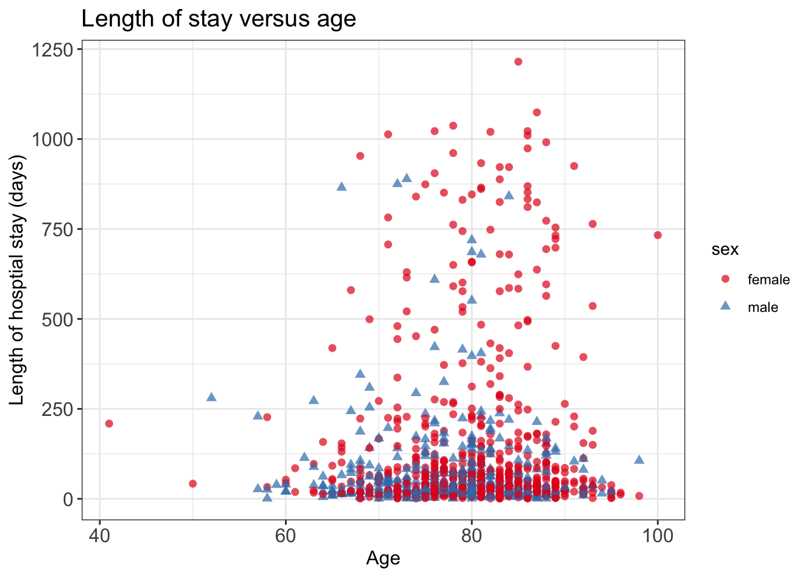
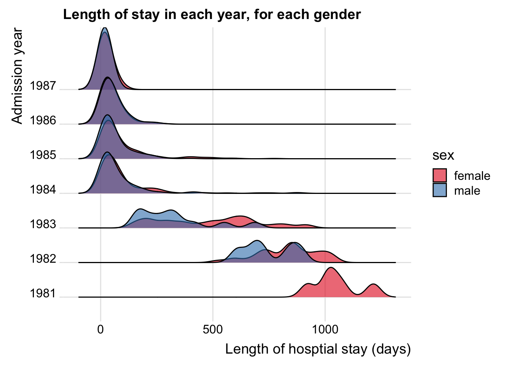
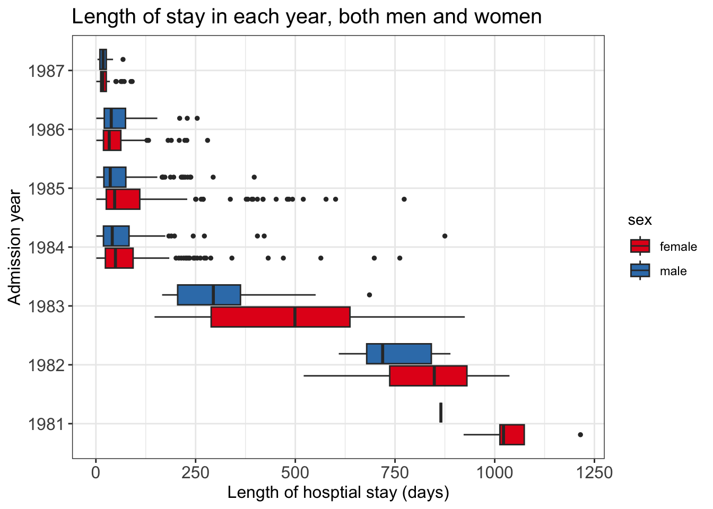

The data liggetid was collected at the Geriatric Department at Ullevål Sykehus. This dataset has been used for teaching at University of Oslo, MF9130E. The course material can be accessed here.
We will focus on the following variables:
admission_year, year of hospital admission
age
sex
admission_from, where 1 = home, 2 = Div. of Medicine, 3 = Div. of Surgery, 4 = Other division, 5 = Other hospital, 6 = Nursing home
stroke, where 1 = yes, 0 = no
los, hospital stay, in days
los <-readRDS('data/los.rds')head(los, 3)
admission_year age sex admission_from stroke los
1 1987 81 female home 0 13
2 1987 96 female home 0 17
3 1987 79 female home 0 6
Some variables need to be recoded and put into factor to display nicely.
plt_scat2 <-ggplot(data = los, mapping =aes(x = age, y = los, shape = sex, color = sex))plt_scat2 <- plt_scat2 +geom_point(size =2, alpha =0.7)# customizeplt_scat2 <- plt_scat2 +labs(x ='Age', y ='Length of hosptial stay (days)', title ='Length of stay versus age')plt_scat2 <- plt_scat2 +theme_bw() # make white background# change text sizeplt_scat2 <- plt_scat2 +theme(axis.text =element_text(size =12),axis.title =element_text(size =12), plot.title =element_text(size =15))# change colorplt_scat2 <- plt_scat2 +scale_color_brewer(palette ='Set1')plt_scat2

Show the code
library(ggridges)plt_ridge <-ggplot(data = los, mapping =aes(x = los, y = admission_year, fill = sex))plt_ridge <- plt_ridge +geom_density_ridges(alpha =0.6) plt_ridge <- plt_ridge +theme_ridges()plt_ridge <- plt_ridge +labs(x ='Length of hosptial stay (days)', y ='Admission year', title ='Length of stay in each year, for each gender')# change colorplt_ridge <- plt_ridge +scale_fill_brewer(palette ='Set1')plt_ridge
Picking joint bandwidth of 32.7

LOS vs year of admission
Show the code
plt_box <-ggplot(data = los, mapping =aes(x = admission_year, y = los, fill = sex))plt_box <- plt_box +geom_boxplot(outlier.size =1)# plt_box <- plt_box + facet_wrap( ~ sex)plt_box <- plt_box +coord_flip()# customizeplt_box <- plt_box +theme_bw() # make white backgroundplt_box <- plt_box +labs(x ='Admission year', y ='Length of hosptial stay (days)', title ='Length of stay in each year, both men and women')plt_box <- plt_box +theme(axis.text =element_text(size =12),axis.title =element_text(size =12), plot.title =element_text(size =15), strip.text =element_text(size =12))plt_box <- plt_box +scale_fill_brewer(palette ='Set1')plt_box

LOS vs types of admission
Show the code
plt_box2 <-ggplot(data = los, mapping =aes(x = admission_year, y = los, fill = sex))plt_box2 <- plt_box2 +geom_boxplot(outlier.size =0.8)plt_box2 <- plt_box2 +facet_wrap( ~ admission_from)# customizeplt_box2 <- plt_box2 +theme_bw() # make white backgroundplt_box2 <- plt_box2 +labs(x ='Admission year', y ='Length of hosptial stay (days)', title ='Length of stay in each year, each type of admission')plt_box2 <- plt_box2 +theme(axis.text =element_text(size =11),axis.title =element_text(size =12), plot.title =element_text(size =15), strip.text =element_text(size =12), axis.text.x =element_text(angle =45) # more readable)plt_box2 <- plt_box2 +scale_fill_brewer(palette ='Set1')plt_box2